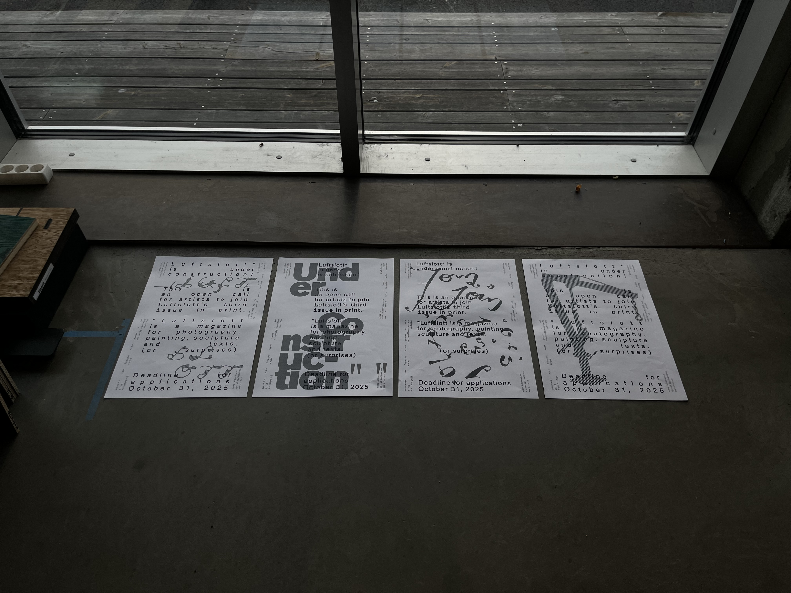
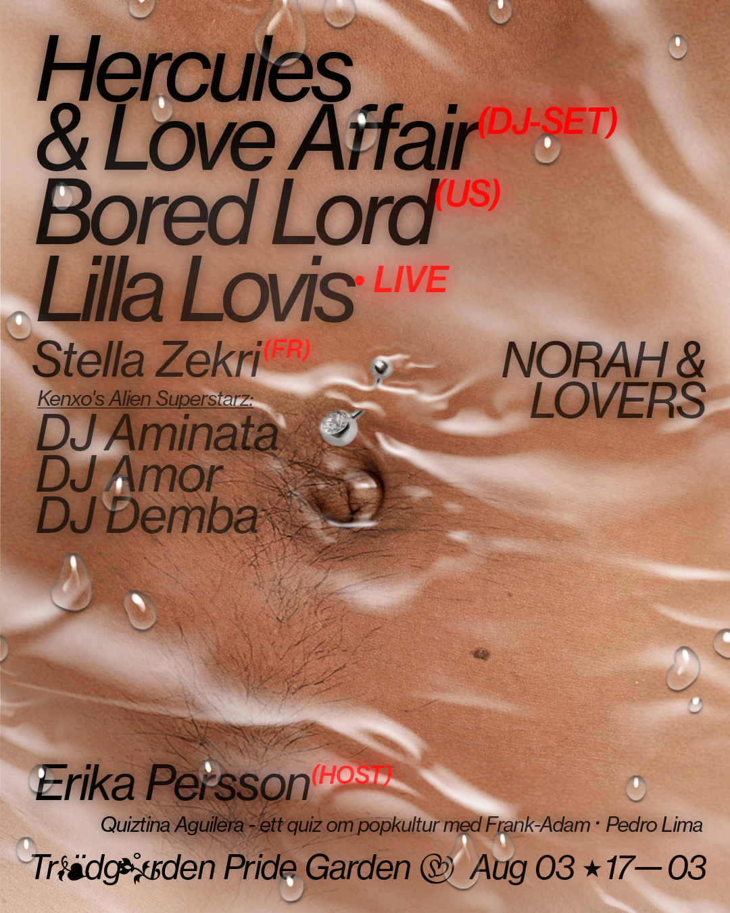
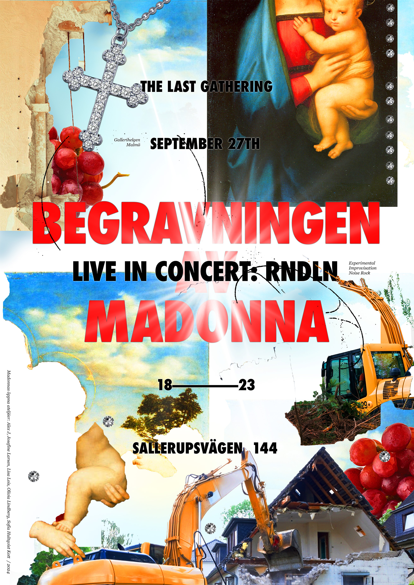
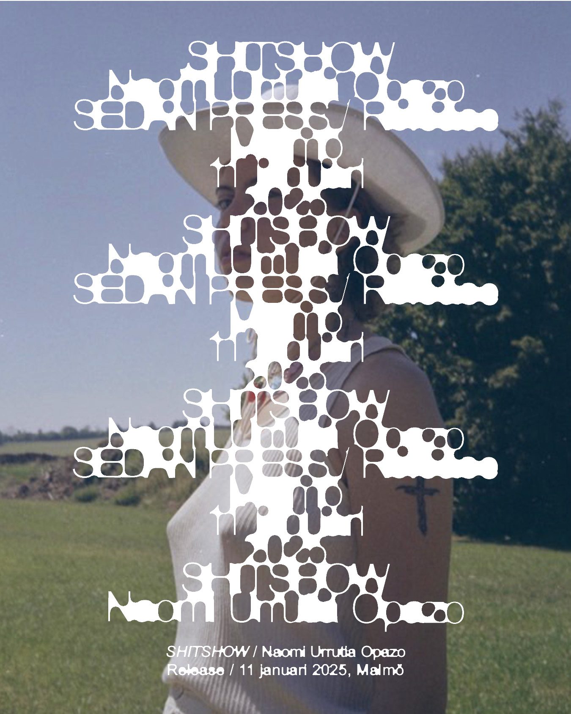
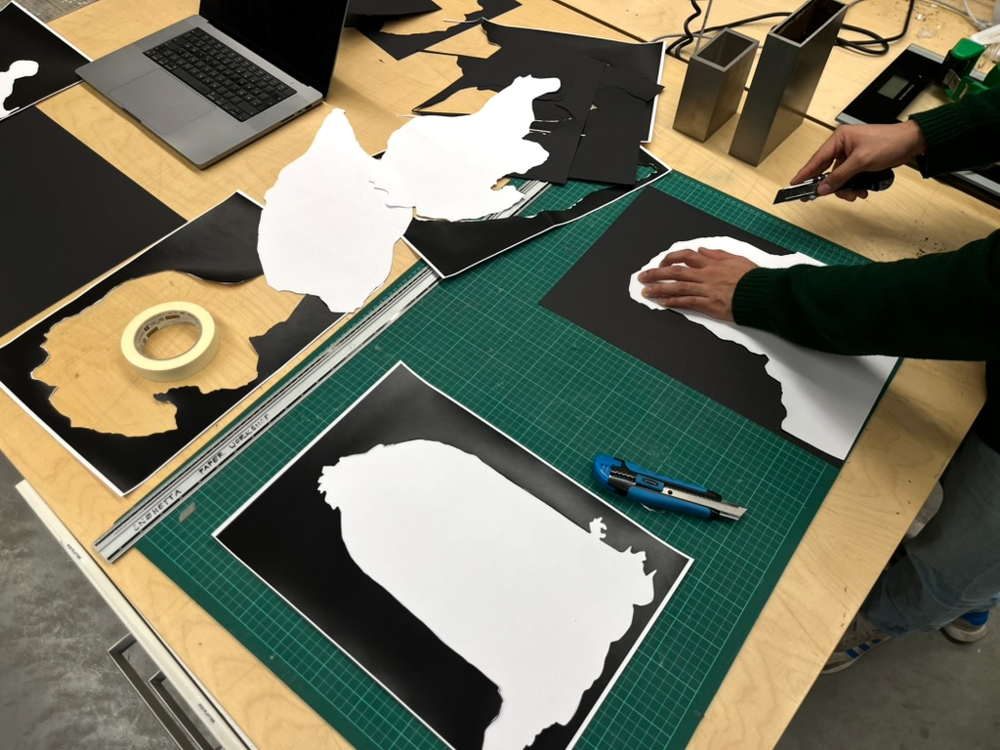

graphic designer at atonemo in stockholm, previously designer at bielke&yang in oslo, design intern at snøhetta in oslo, design intern at research and development in stockholm, freelance designer anywhere every now and then and also graduate of beckmans college of design in stockholm and östra grevie folkhögskola in skåne. reach me at: adaari@icloud.com @adamglupsk @babyglupsk
julia åberg – web design for julia åberg. juliaaberg.com
bookland – identity, illustration and website for a pop-up book shop at the beckmans graduation exhibition, with maja ringsäter and tiffany louise hoff. bookland.beckmans.se
luftslott is under construction – open call posters for the third issue of luftslott magazine.

luftslott – posters
tyda – hand assembled poster and cell animation based on fleeting definitions, exhibited at vandalorum. with maja ringsäter and måns horning.

trädgården pride garden – art direction and graphic design for the 2024 pride clubs.
there is no such thing as magic – exhibition identity and communication. with maja ringsäter and solvej jansson.
hdk valand – exhibition poster.


shitshow – naomi burton book release.
